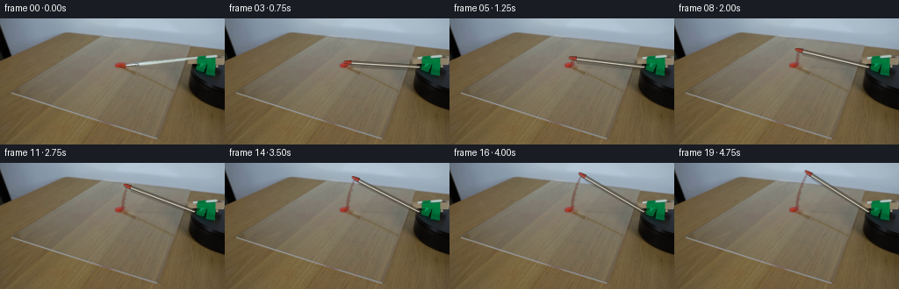
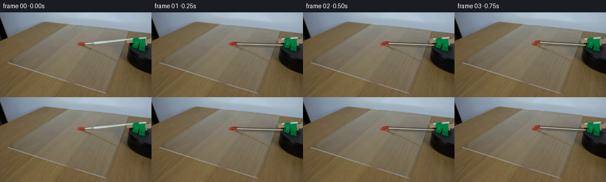
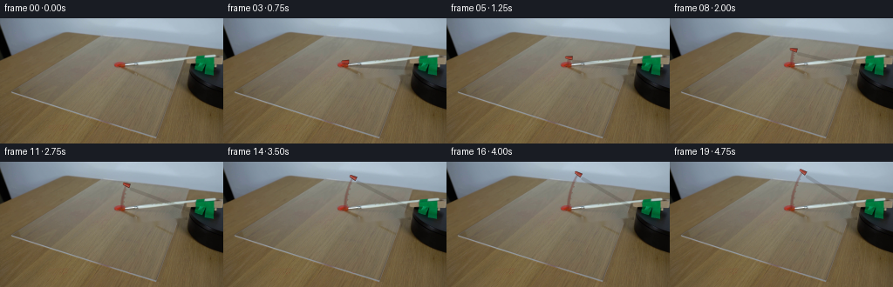
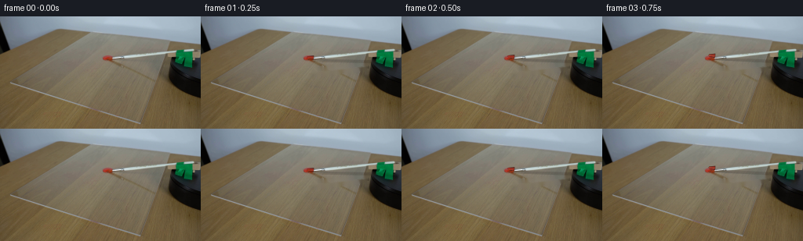
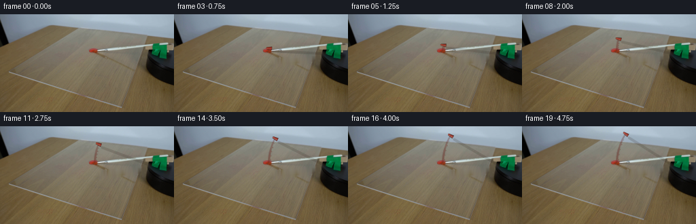
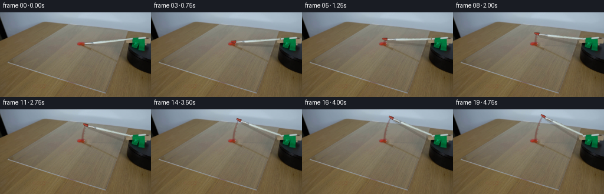
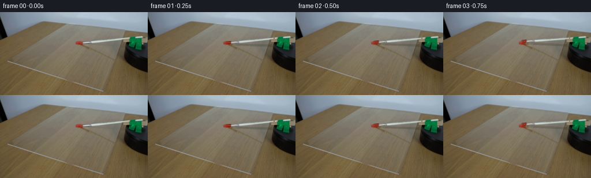
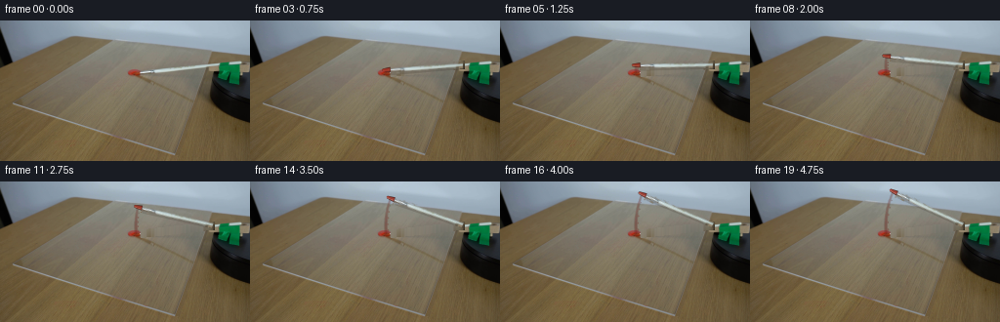
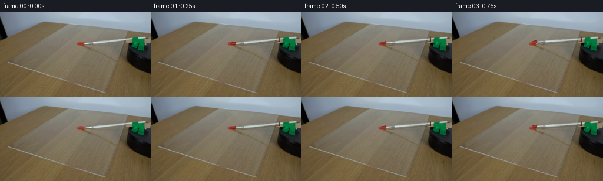

CODING AGENTS AS PIXEL WORLD MODELS
traex/DeepSeek-V4.1-Flash · 0132
点击播放 · 原生 RGB 像素
逐轮保存的候选
回放视频、检查图与代码变化。
每份候选均可单独播放。实际图片检查记录在下方工具轨迹中。
候选 01播放与检查图
点击播放 · 原生 RGB 像素


展开代码变化
--- 上一保存版本
+++ 本次保存版本
@@ -0,0 +1,263 @@
+from pathlib import Path
+import math
+
+import cv2
+import numpy as np
+from PIL import Image
+
+import artifact_io
+
+
+ROOT = Path(__file__).resolve().parent
+N_FRAMES = 20
+FPS = 4
+WIDTH = 256
+HEIGHT = 144
+
+# The brush arm pivots at the green clamp. Its initial tip is just inside the
+# red dollop, so the first motion frames read as a loaded brush pulling paint.
+PIVOT = np.array([221.0, 55.0], dtype=np.float32)
+BODY_TIP_0 = np.array([143.0, 53.0], dtype=np.float32)
+ARM_RADIUS = float(np.linalg.norm(BODY_TIP_0 - PIVOT))
+ARM_ANGLE_0 = math.atan2(BODY_TIP_0[1] - PIVOT[1], BODY_TIP_0[0] - PIVOT[0])
+TOTAL_ROTATION = math.radians(31.0)
+BRUSH_LENGTH = 7.0
+
+
+def smoothstep(value):
+ value = np.clip(value, 0.0, 1.0)
+ return value * value * (3.0 - 2.0 * value)
+
+
+def build_clean_plate(source):
+ """Remove the thin arm while retaining the paint, clamp, and platform."""
+ mask = np.zeros((HEIGHT, WIDTH), dtype=np.uint8)
+ for x in range(138, 222):
+ y = 69.65 - 0.114 * x
+ cv2.line(
+ mask,
+ (x, int(round(y - 2.2))),
+ (x, int(round(y + 2.5))),
+ 255,
+ 1,
+ cv2.LINE_8,
+ )
+ clean = cv2.inpaint(source, mask, 4, cv2.INPAINT_TELEA)
+
+ # Re-seat the two fixtures exactly as seen in frame zero.
+ clean[40:70, 220:251] = source[40:70, 220:251]
+ clean[67:111, 212:256] = source[67:111, 212:256]
+ return clean
+
+
+class Overlay:
+ def __init__(self, scale=4):
+ self.scale = scale
+ self.rgba = np.zeros(
+ (HEIGHT * scale, WIDTH * scale, 4), dtype=np.uint8
+ )
+
+ def point(self, point):
+ return tuple(
+ int(round(float(component) * self.scale)) for component in point
+ )
+
+ def line(self, start, end, color, width, alpha):
+ cv2.line(
+ self.rgba,
+ self.point(start),
+ self.point(end),
+ (*color, int(round(alpha * 255))),
+ max(1, int(round(width * self.scale))),
+ cv2.LINE_AA,
+ )
+
+ def polygon(self, points, color, alpha):
+ polygon = np.rint(np.asarray(points) * self.scale).astype(np.int32)
+ cv2.fillPoly(
+ self.rgba,
+ [polygon],
+ (*color, int(round(alpha * 255))),
+ cv2.LINE_AA,
+ )
+
+ def circle(self, center, radius, color, alpha):
+ cv2.circle(
+ self.rgba,
+ self.point(center),
+ max(1, int(round(radius * self.scale))),
+ (*color, int(round(alpha * 255))),
+ -1,
+ cv2.LINE_AA,
+ )
+
+ def composite(self, image):
+ small = cv2.resize(
+ self.rgba,
+ (WIDTH, HEIGHT),
+ interpolation=cv2.INTER_AREA,
+ ).astype(np.float32)
+ alpha = small[:, :, 3:4] / 255.0
+ color = small[:, :, :3]
+ return image * (1.0 - alpha) + color * alpha
+
+
+def brush_geometry(frame_index):
+ progress = frame_index / (N_FRAMES - 1)
+ # A restrained ease keeps the demonstration mechanical but not abrupt.
+ angle = ARM_ANGLE_0 + TOTAL_ROTATION * smoothstep(progress)
+ direction = np.array([math.cos(angle), math.sin(angle)], dtype=np.float32)
+ normal = np.array([-direction[1], direction[0]], dtype=np.float32)
+ body_tip = PIVOT + ARM_RADIUS * direction
+ bristle_tip = body_tip + BRUSH_LENGTH * direction
+ return angle, direction, normal, body_tip, bristle_tip
+
+
+def paint_trail(image, frame_index, body_tip):
+ if frame_index == 0:
+ return image
+
+ progress = frame_index / (N_FRAMES - 1)
+ travel = smoothstep(progress)
+ if travel <= 0.0:
+ return image
+
+ points = []
+ samples = 34
+ for index in range(samples + 1):
+ fraction = index / samples
+ path_angle = ARM_ANGLE_0 + TOTAL_ROTATION * travel * fraction
+ center = PIVOT + (ARM_RADIUS + 3.5) * np.array(
+ [math.cos(path_angle), math.sin(path_angle)], dtype=np.float32
+ )
+ points.append(center)
+
+ layer = Overlay()
+ for index in range(len(points) - 1):
+ fraction = index / max(1, len(points) - 2)
+ width = 3.2 - 1.35 * fraction
+ alpha = 0.30 - 0.09 * fraction
+ layer.line(points[index], points[index + 1], (112, 35, 27), width, alpha)
+
+ # A narrow, darker center gives the streak a wet painted edge.
+ for index in range(len(points) - 1):
+ fraction = index / max(1, len(points) - 2)
+ width = 1.35 - 0.45 * fraction
+ alpha = 0.40 - 0.12 * fraction
+ layer.line(points[index], points[index + 1], (92, 19, 15), width, alpha)
+
+ # Small deterministic deposits keep the edge from looking vector-clean.
+ for index in range(3, len(points) - 2, 6):
+ fraction = index / max(1, len(points) - 1)
+ direction = points[index] - points[index - 1]
+ length = float(np.linalg.norm(direction))
+ if length < 1e-4:
+ continue
+ normal = np.array([-direction[1], direction[0]]) / length
+ offset = (1.8 if index % 2 else -1.6) + 0.5 * math.sin(index * 2.1)
+ center = points[index] + normal * offset
+ radius = max(0.45, 0.92 - 0.45 * fraction)
+ layer.circle(center, radius, (120, 31, 22), 0.33)
+
+ return layer.composite(image)
+
+
+def draw_brush(image, frame_index):
+ if frame_index == 0:
+ return image.copy()
+
+ _, direction, normal, body_tip, bristle_tip = brush_geometry(frame_index)
+
+ # Soft cast shadow, slightly displaced toward the lower-right.
+ shadow = Overlay()
+ shadow.line(
+ PIVOT + np.array([2.0, 3.0]),
+ body_tip + np.array([2.4, 3.6]),
+ (39, 29, 20),
+ 3.8,
+ 0.24,
+ )
+ image = shadow.composite(image)
+
+ # Dark lower contour and warm steel body.
+ metal = Overlay()
+ metal.line(PIVOT, body_tip, (72, 64, 50), 3.7, 0.72)
+ metal.line(PIVOT, body_tip, (139, 134, 119), 2.25, 0.86)
+ metal.line(
+ PIVOT - normal * 0.55,
+ body_tip - normal * 0.55,
+ (223, 221, 207),
+ 1.05,
+ 0.88,
+ )
+ metal.line(
+ PIVOT + normal * 0.70,
+ body_tip + normal * 0.70,
+ (76, 68, 53),
+ 0.75,
+ 0.64,
+ )
+
+ # Red-loaded bristle tuft, tapered toward its tip.
+ base_center = body_tip - direction * 1.0
+ tuft = [
+ base_center + normal * 2.55,
+ base_center - normal * 2.35,
+ bristle_tip - normal * 1.20,
+ bristle_tip + normal * 1.35,
+ ]
+ metal.polygon(tuft, (96, 27, 19), 0.92)
+ metal.line(
+ body_tip + normal * 0.45,
+ bristle_tip + normal * 0.35,
+ (156, 42, 27),
+ 1.45,
+ 0.86,
+ )
+ metal.line(
+ body_tip - normal * 1.05,
+ bristle_tip - normal * 0.55,
+ (194, 72, 48),
+ 0.62,
+ 0.62,
+ )
+ image = metal.composite(image)
+
+ # The clamp and platform occlude the arm at its attachment point.
+ image[40:70, 220:251] = image[40:70, 220:251]
+ image[67:111, 212:256] = image[67:111, 212:256]
+ return image
+
+
+def render(source):
+ clean = build_clean_plate(source)
+ frames = np.empty((N_FRAMES, HEIGHT, WIDTH, 3), dtype=np.uint8)
+ frames[0] = source
+
+ for index in range(1, N_FRAMES):
+ _, _, _, body_tip, _ = brush_geometry(index)
+ frame = clean.astype(np.float32).copy()
+ frame = paint_trail(frame, index, body_tip)
+ frame = draw_brush(frame, index)
+ frames[index] = np.clip(np.rint(frame), 0, 255).astype(np.uint8)
+
+ return frames, clean
+
+
+def main():
+ source = np.array(
+ Image.open(ROOT / "first_frame.png").convert("RGB"), dtype=np.uint8
+ )
+ frames, clean = render(source)
+
+ # Useful intermediates for local inspection; the submitted video is the
+ # artifact written by artifact_io.save below.
+ tmp = ROOT / ".tmp"
+ tmp.mkdir(exist_ok=True)
+ Image.fromarray(clean).save(tmp / "clean_plate.png")
+
+ artifact_io.save(frames, ROOT)
+
+
+if __name__ == "__main__":
+ main()
候选 02播放与检查图
点击播放 · 原生 RGB 像素


展开代码变化
--- 上一保存版本
+++ 本次保存版本
@@ -22,6 +22,7 @@
ARM_ANGLE_0 = math.atan2(BODY_TIP_0[1] - PIVOT[1], BODY_TIP_0[0] - PIVOT[0])
TOTAL_ROTATION = math.radians(31.0)
BRUSH_LENGTH = 7.0
+ARM_SLOPE = -0.114
def smoothstep(value):
@@ -32,22 +33,44 @@
def build_clean_plate(source):
"""Remove the thin arm while retaining the paint, clamp, and platform."""
mask = np.zeros((HEIGHT, WIDTH), dtype=np.uint8)
- for x in range(138, 222):
- y = 69.65 - 0.114 * x
+ for x in range(144, 222):
+ y = 71.3 + ARM_SLOPE * (x - 143.0)
cv2.line(
mask,
- (x, int(round(y - 2.2))),
- (x, int(round(y + 2.5))),
+ (x, int(round(y - 5.0))),
+ (x, int(round(y + 5.2))),
255,
1,
cv2.LINE_8,
)
- clean = cv2.inpaint(source, mask, 4, cv2.INPAINT_TELEA)
+ clean = cv2.inpaint(source, mask, 2.5, cv2.INPAINT_TELEA)
# Re-seat the two fixtures exactly as seen in frame zero.
clean[40:70, 220:251] = source[40:70, 220:251]
+ platform = np.indices((HEIGHT, WIDTH))[1] >= 215
+ platform &= np.indices((HEIGHT, WIDTH))[0] >= 52
+ clean[platform] = source[platform]
clean[67:111, 212:256] = source[67:111, 212:256]
return clean
+
+
+def build_brush_cutout(source, clean):
+ """Extract the photographic arm and its edge shading from frame zero."""
+ yy, xx = np.indices((HEIGHT, WIDTH), dtype=np.float32)
+ center = 55.4 + ARM_SLOPE * (xx - 143.0)
+ geometry = (xx >= 143.0) & (xx <= 217.0)
+ geometry &= (yy >= center - 5.2) & (yy <= center + 5.0)
+
+ difference = np.abs(
+ source.astype(np.float32) - clean.astype(np.float32)
+ ).mean(axis=2)
+ alpha = np.clip((difference - 3.0) / 14.0, 0.0, 1.0)
+ alpha = smoothstep(alpha) * geometry.astype(np.float32)
+
+ # Keep a little of the naturally soft edge around the arm.
+ alpha = cv2.GaussianBlur(alpha, (0, 0), 0.42)
+ alpha[~geometry & (alpha < 0.35)] = 0.0
+ return source.astype(np.float32), alpha.astype(np.float32)
class Overlay:
@@ -162,66 +185,86 @@
return layer.composite(image)
-def draw_brush(image, frame_index):
+def draw_brush(image, frame_index, brush_color, brush_alpha):
if frame_index == 0:
return image.copy()
- _, direction, normal, body_tip, bristle_tip = brush_geometry(frame_index)
-
- # Soft cast shadow, slightly displaced toward the lower-right.
+ angle, direction, normal, body_tip, bristle_tip = brush_geometry(frame_index)
+ delta = angle - ARM_ANGLE_0
+ cosine, sine = math.cos(delta), math.sin(delta)
+ matrix = np.array(
+ [
+ [cosine, -sine, PIVOT[0] - cosine * PIVOT[0] + sine * PIVOT[1]],
+ [sine, cosine, PIVOT[1] - sine * PIVOT[0] - cosine * PIVOT[1]],
+ ],
+ dtype=np.float32,
+ )
+
+ premultiplied = brush_color * brush_alpha[:, :, None]
+ warped_color = cv2.warpAffine(
+ premultiplied,
+ matrix,
+ (WIDTH, HEIGHT),
+ flags=cv2.INTER_LINEAR,
+ borderMode=cv2.BORDER_CONSTANT,
+ borderValue=0,
+ )
+ warped_alpha = cv2.warpAffine(
+ brush_alpha,
+ matrix,
+ (WIDTH, HEIGHT),
+ flags=cv2.INTER_LINEAR,
+ borderMode=cv2.BORDER_CONSTANT,
+ borderValue=0,
+ )
+ warped_color = np.divide(
+ warped_color,
+ np.maximum(warped_alpha[:, :, None], 1e-4),
+ out=np.zeros_like(warped_color),
+ where=warped_alpha[:, :, None] > 1e-4,
+ )
+
+ # Add only a restrained new cast shadow; the source cutout already carries
+ # the original metal reflections and dark lower contour.
shadow = Overlay()
shadow.line(
- PIVOT + np.array([2.0, 3.0]),
- body_tip + np.array([2.4, 3.6]),
- (39, 29, 20),
- 3.8,
- 0.24,
+ PIVOT + np.array([1.7, 3.0]),
+ body_tip + np.array([2.3, 3.8]),
+ (40, 30, 21),
+ 3.2,
+ 0.16,
)
image = shadow.composite(image)
- # Dark lower contour and warm steel body.
- metal = Overlay()
- metal.line(PIVOT, body_tip, (72, 64, 50), 3.7, 0.72)
- metal.line(PIVOT, body_tip, (139, 134, 119), 2.25, 0.86)
- metal.line(
- PIVOT - normal * 0.55,
- body_tip - normal * 0.55,
- (223, 221, 207),
- 1.05,
- 0.88,
- )
- metal.line(
- PIVOT + normal * 0.70,
- body_tip + normal * 0.70,
- (76, 68, 53),
- 0.75,
- 0.64,
- )
-
- # Red-loaded bristle tuft, tapered toward its tip.
- base_center = body_tip - direction * 1.0
+ alpha = np.clip(warped_alpha, 0.0, 1.0)[:, :, None]
+ image = image * (1.0 - alpha) + warped_color * alpha
+
+ # Red-loaded bristle tuft, tapered toward its tip. This is attached to
+ # the photographic arm and moves with the same rigid transform.
+ tuft_layer = Overlay()
+ base_center = body_tip - direction * 0.8
tuft = [
- base_center + normal * 2.55,
- base_center - normal * 2.35,
- bristle_tip - normal * 1.20,
- bristle_tip + normal * 1.35,
+ base_center + normal * 2.45,
+ base_center - normal * 2.20,
+ bristle_tip - normal * 1.15,
+ bristle_tip + normal * 1.30,
]
- metal.polygon(tuft, (96, 27, 19), 0.92)
- metal.line(
- body_tip + normal * 0.45,
- bristle_tip + normal * 0.35,
- (156, 42, 27),
- 1.45,
- 0.86,
- )
- metal.line(
- body_tip - normal * 1.05,
- bristle_tip - normal * 0.55,
- (194, 72, 48),
- 0.62,
- 0.62,
- )
- image = metal.composite(image)
+ tuft_layer.polygon(tuft, (100, 27, 19), 0.91)
+ tuft_layer.line(
+ body_tip + normal * 0.40,
+ bristle_tip + normal * 0.30,
+ (158, 43, 27),
+ 1.35,
+ 0.84,
+ )
+ tuft_layer.line(
+ body_tip - normal * 0.95,
+ bristle_tip - normal * 0.48,
+ (194, 70, 46),
+ 0.58,
+ 0.60,
+ )
+ image = tuft_layer.composite(image)
# The clamp and platform occlude the arm at its attachment point.
image[40:70, 220:251] = image[40:70, 220:251]
@@ -231,6 +274,7 @@
def render(source):
clean = build_clean_plate(source)
+ brush_color, brush_alpha = build_brush_cutout(source, clean)
frames = np.empty((N_FRAMES, HEIGHT, WIDTH, 3), dtype=np.uint8)
frames[0] = source
@@ -238,7 +282,7 @@
_, _, _, body_tip, _ = brush_geometry(index)
frame = clean.astype(np.float32).copy()
frame = paint_trail(frame, index, body_tip)
- frame = draw_brush(frame, index)
+ frame = draw_brush(frame, index, brush_color, brush_alpha)
frames[index] = np.clip(np.rint(frame), 0, 255).astype(np.uint8)
return frames, clean
候选 03播放与检查图
点击播放 · 原生 RGB 像素

展开代码变化
--- 上一保存版本
+++ 本次保存版本
@@ -43,7 +43,30 @@
1,
cv2.LINE_8,
)
- clean = cv2.inpaint(source, mask, 2.5, cv2.INPAINT_TELEA)
+ clean = cv2.inpaint(source, mask, 2.5, cv2.INPAINT_NS)
+
+ # Inpainting can pick up the arm's specular streak as a bright horizontal
+ # scar. Replace the narrow, saturated band with vertically interpolated
+ # table pixels while retaining the natural wood texture above and below.
+ clean_f = clean.astype(np.float32)
+ for x in range(144, 222):
+ center_y = 70.7 + ARM_SLOPE * (x - 143.0)
+ y0 = int(math.floor(center_y - 2.2))
+ y1 = int(math.ceil(center_y + 2.4))
+ top = max(0, y0 - 2)
+ bottom = min(HEIGHT - 1, y1 + 2)
+ if bottom <= top:
+ continue
+ top_color = clean_f[top, x].copy()
+ bottom_color = clean_f[bottom, x].copy()
+ for y in range(max(0, y0), min(HEIGHT, y1 + 1)):
+ fraction = (y - top) / float(bottom - top)
+ clean_f[y, x] = (
+ top_color * (1.0 - fraction) + bottom_color * fraction
+ )
+ # Very subtle grain avoids a perfectly smooth repair stripe.
+ clean_f[y0 : y1 + 1, x] *= 1.0 + 0.006 * math.sin(x * 1.73 + y0)
+ clean = np.clip(np.rint(clean_f), 0, 255).astype(np.uint8)
# Re-seat the two fixtures exactly as seen in frame zero.
clean[40:70, 220:251] = source[40:70, 220:251]
候选 04播放与检查图
点击播放 · 原生 RGB 像素


展开代码变化
--- 上一保存版本
+++ 本次保存版本
@@ -25,6 +25,10 @@
ARM_SLOPE = -0.114
+def arm_center_y(x):
+ return 69.65 + ARM_SLOPE * x
+
+
def smoothstep(value):
value = np.clip(value, 0.0, 1.0)
return value * value * (3.0 - 2.0 * value)
@@ -34,11 +38,11 @@
"""Remove the thin arm while retaining the paint, clamp, and platform."""
mask = np.zeros((HEIGHT, WIDTH), dtype=np.uint8)
for x in range(144, 222):
- y = 71.3 + ARM_SLOPE * (x - 143.0)
+ y = arm_center_y(x)
cv2.line(
mask,
- (x, int(round(y - 5.0))),
- (x, int(round(y + 5.2))),
+ (x, int(round(y - 2.2))),
+ (x, int(round(y + 2.5))),
255,
1,
cv2.LINE_8,
@@ -50,9 +54,9 @@
# table pixels while retaining the natural wood texture above and below.
clean_f = clean.astype(np.float32)
for x in range(144, 222):
- center_y = 70.7 + ARM_SLOPE * (x - 143.0)
- y0 = int(math.floor(center_y - 2.2))
- y1 = int(math.ceil(center_y + 2.4))
+ center_y = arm_center_y(x)
+ y0 = int(math.floor(center_y - 2.0))
+ y1 = int(math.ceil(center_y + 2.2))
top = max(0, y0 - 2)
bottom = min(HEIGHT - 1, y1 + 2)
if bottom <= top:
@@ -80,9 +84,9 @@
def build_brush_cutout(source, clean):
"""Extract the photographic arm and its edge shading from frame zero."""
yy, xx = np.indices((HEIGHT, WIDTH), dtype=np.float32)
- center = 55.4 + ARM_SLOPE * (xx - 143.0)
+ center = 69.65 + ARM_SLOPE * xx
geometry = (xx >= 143.0) & (xx <= 217.0)
- geometry &= (yy >= center - 5.2) & (yy <= center + 5.0)
+ geometry &= (yy >= center - 2.6) & (yy <= center + 2.6)
difference = np.abs(
source.astype(np.float32) - clean.astype(np.float32)
@@ -208,7 +212,7 @@
return layer.composite(image)
-def draw_brush(image, frame_index, brush_color, brush_alpha):
+def draw_brush(image, frame_index, brush_color, brush_alpha, source):
if frame_index == 0:
return image.copy()
@@ -290,8 +294,11 @@
image = tuft_layer.composite(image)
# The clamp and platform occlude the arm at its attachment point.
- image[40:70, 220:251] = image[40:70, 220:251]
- image[67:111, 212:256] = image[67:111, 212:256]
+ image[40:70, 220:251] = source[40:70, 220:251]
+ yy, xx = np.indices((HEIGHT, WIDTH))
+ platform = (xx >= 215) & (yy >= 52)
+ image[platform] = source[platform]
+ image[67:111, 212:256] = source[67:111, 212:256]
return image
@@ -305,7 +312,7 @@
_, _, _, body_tip, _ = brush_geometry(index)
frame = clean.astype(np.float32).copy()
frame = paint_trail(frame, index, body_tip)
- frame = draw_brush(frame, index, brush_color, brush_alpha)
+ frame = draw_brush(frame, index, brush_color, brush_alpha, source)
frames[index] = np.clip(np.rint(frame), 0, 255).astype(np.uint8)
return frames, clean
候选 05播放与检查图
点击播放 · 原生 RGB 像素


展开代码变化
--- 上一保存版本
+++ 本次保存版本
@@ -16,7 +16,7 @@
# The brush arm pivots at the green clamp. Its initial tip is just inside the
# red dollop, so the first motion frames read as a loaded brush pulling paint.
-PIVOT = np.array([221.0, 55.0], dtype=np.float32)
+PIVOT = np.array([221.0, 44.5], dtype=np.float32)
BODY_TIP_0 = np.array([143.0, 53.0], dtype=np.float32)
ARM_RADIUS = float(np.linalg.norm(BODY_TIP_0 - PIVOT))
ARM_ANGLE_0 = math.atan2(BODY_TIP_0[1] - PIVOT[1], BODY_TIP_0[0] - PIVOT[0])
@@ -41,8 +41,8 @@
y = arm_center_y(x)
cv2.line(
mask,
- (x, int(round(y - 2.2))),
- (x, int(round(y + 2.5))),
+ (x, int(round(y - 3.8))),
+ (x, int(round(y + 3.8))),
255,
1,
cv2.LINE_8,
@@ -55,10 +55,10 @@
clean_f = clean.astype(np.float32)
for x in range(144, 222):
center_y = arm_center_y(x)
- y0 = int(math.floor(center_y - 2.0))
- y1 = int(math.ceil(center_y + 2.2))
- top = max(0, y0 - 2)
- bottom = min(HEIGHT - 1, y1 + 2)
+ y0 = int(math.floor(center_y - 3.4))
+ y1 = int(math.ceil(center_y + 3.4))
+ top = max(0, y0 - 6)
+ bottom = min(HEIGHT - 1, y1 + 6)
if bottom <= top:
continue
top_color = clean_f[top, x].copy()
@@ -86,7 +86,7 @@
yy, xx = np.indices((HEIGHT, WIDTH), dtype=np.float32)
center = 69.65 + ARM_SLOPE * xx
geometry = (xx >= 143.0) & (xx <= 217.0)
- geometry &= (yy >= center - 2.6) & (yy <= center + 2.6)
+ geometry &= (yy >= center - 3.8) & (yy <= center + 3.8)
difference = np.abs(
source.astype(np.float32) - clean.astype(np.float32)
可观测工具轨迹
实际执行的命令与返回图片。
命令 1exit 0
/bin/bash -c "pwd && rg --files -g '"'!*.mp4'"' -g '"'!*.mov'"' -g '"'!*.webm'"' | sed -n '1,120p'"
命令 2exit 0
/bin/bash -c "sed -n '1,240p' prompt.txt"
命令 3exit 0
/bin/bash -c "sed -n '1,260p' GENERATION_RULES.md"
命令 4exit 0
/bin/bash -c "file first_frame.png; identify first_frame.png 2>/dev/null || true; command -v ffmpeg; ffmpeg -version | sed -n '1,3p'"
命令 5exit 0
/bin/bash -c "sed -n '1,260p' artifact_io.py"
命令 6exit 0
/bin/bash -c "python - <<'PY'
from PIL import Image
im=Image.open('first_frame.png')
print(im.mode, im.size, im.getextrema())
print('info', im.info)
PY"命令 7exit 0
/bin/bash -c "sed -n '1,220p' player_template.html"
命令 8exit 0
/bin/bash -c "python - <<'PY'
from PIL import Image
import numpy as np
im=np.array(Image.open('first_frame.png').convert('RGB'))
print(im.shape)
# coarse 8x8 block means
for by in range(0,144,8):
row=[]
for bx in range(0,256,8):
b=im[by:by+8,bx:bx+8].mean((0,1))
r,g,bl=b
if r>g*1.35 and r>bl*1.25: c='R'
elif r>g*1.12 and g>bl*1.05 and r>70: c='O'
elif r>g*1.06 and g>bl*1.05 and r>40: c='w'
elif bl>r*1.12 and bl>g*1.08: c='B'
elif g>r*1.08 and g>bl*1.03: c='G'
elif max(b)<35: c='#'
elif max(b)<70: c='d'
elif max(b)<120: c='m'
elif max(b)<175: c='l'
else: c='.'
row.append(c)
print(f'{by:3d}', ''.join(row))
print('palette top colors quantized 16')
q=(im//16)*16
u,c=np.unique(q.reshape(-1,3),axis=0,return_counts=True)
for i in np.argsort(c)[-30:][::-1]: print(tuple(u[i]), c[i])
PY"命令 9exit 0
/bin/bash -c "python - <<'PY'
from PIL import Image
import numpy as np
im=np.array(Image.open('first_frame.png').convert('RGB')).astype(float)
r,g,b=im.transpose(2,0,1)
# red dominance, dark, bright, blue-ish
masks={
'red':(r>1.45*g)&(r>1.35*b)&(r>55),
'deepred':(r>70)&(r>1.8*g)&(r>1.6*b),
'dark':(r+g+b<100),
'black':(r+g+b<45),
'bright':(r+g+b>480),
'blue':(b>r*1.15)&(b>g*1.05)&(b>80),
'green':(g>r*1.1)&(g>b*1.05)&(g>70),
}
for name,m in masks.items():
ys,xs=np.where(m)
print(name,len(xs), 'bbox', (xs.min(),ys.min(),xs.max(),ys.max()) if len(xs) else None)
# occupancy 16x8 blocks
print(' ', [(bx,by,int(m[by:by+8,bx:bx+16].sum())) for by in range(0,144,8) for bx in range(0,256,16) if m[by:by+8,bx:bx+16].sum()>12])
# print color points in central region
for y in range(40,121,5):
vals=[]
for x in range(0,256,10):
p=im[y:y+5,x:x+10].mean((0,1)).astype(int)
vals.append('%02x%02x%02x'%tuple(p))
print(f'{y:3}', ' '.join(vals))
PY"命令 10exit 0
/bin/bash -c "python - <<'PY' mods=['cv2','scipy','skimage','numpy','PIL','imageio','matplotlib'] for m in mods: try: x=__import__(m); print(m,'ok',getattr(x,'__version__','')) except Exception as e: print(m,'NO',e) PY"
命令 11exit 0
/bin/bash -c "python - <<'PY'
import cv2, numpy as np
im=cv2.imread('first_frame.png')
g=cv2.cvtColor(im,cv2.COLOR_BGR2GRAY)
# lines
edges=cv2.Canny(im,40,100)
lines=cv2.HoughLinesP(edges,1,np.pi/180,threshold=18,minLineLength=12,maxLineGap=3)
for l in sorted(lines[:,0].tolist(), key=lambda p: -((p[2]-p[0])**2+(p[3]-p[1])**2))[:80]:
x1,y1,x2,y2=l; length=((x2-x1)**2+(y2-y1)**2)**.5
print('%6.1f (%3d,%3d)-(%3d,%3d) angle %6.1f'%(length,x1,y1,x2,y2,np.degrees(np.arctan2(y2-y1,x2-x1))))
PY"命令 12exit 0
/bin/bash -c "python - <<'PY'
import cv2, numpy as np
im=cv2.imread('first_frame.png')[:,:,::-1]
# print nearest-neighbor ascii around suspected brush and platform
chars=' .:-=+*#%@'
for y in range(20,110):
row=''
for x in range(100,256):
r,g,b=im[y,x].astype(float)
# dark edge content
val=(r+g+b)/3
c=chars[min(9,int(val/256*10))]
if r>g*1.45 and r>b*1.3 and r>60: c='R'
elif g>r*1.25 and g>b*1.2 and g>50: c='G'
elif b>r*1.2 and b>g*1.05 and b>80: c='B'
row+=c
if any(ch not in ' .' for ch in row[::4]): print('%3d %s'%(y,row))
PY"命令 13exit 0
/bin/bash -c "python - <<'PY'
import cv2, numpy as np
im=cv2.imread('first_frame.png')[:,:,::-1]
# detect highly saturated green/red/yellow pixels and print per-row spans
for name,m in [
('green',(im[:,:,1]>im[:,:,0]*1.25)&(im[:,:,1]>im[:,:,2]*1.2)&(im[:,:,1]>55)),
('red',(im[:,:,0]>im[:,:,1]*1.45)&(im[:,:,0]>im[:,:,2]*1.35)&(im[:,:,0]>55)),
('dark',(im.sum(2)<90))]:
print('\\n',name)
for y in range(144):
xs=np.where(m[y])[0]
if len(xs): print(y, [(int(a[0]),int(a[-1])) for a in np.split(xs,np.where(np.diff(xs)>1)[0]+1) if len(a)>=2])
PY"命令 14exit 0
/bin/bash -c "python - <<'PY'
from PIL import Image
import numpy as np
im=np.array(Image.open('first_frame.png').convert('RGB'))
# exact pixels around green region, print hex matrix every 1 px 215:250 x 40:70
for y in range(38,71):
print('%3d '%y+' '.join('%02x%02x%02x'%tuple(im[y,x]) for x in range(214,251)))
PY"命令 15exit 0
/bin/bash -c "python - <<'PY'
import numpy as np
from PIL import Image
im=np.array(Image.open('first_frame.png')).astype(float)
# edge strength map via gradients, report lines using Hough after color-specific grayscale
import cv2
for chan,name in [(im.mean(2),'gray'),(im[:,:,1],'g'),(im.max(2)-im.min(2),'sat')]:
a=np.clip(chan,0,255).astype(np.uint8)
e=cv2.Canny(a,20,60)
lines=cv2.HoughLinesP(e,1,np.pi/360,threshold=10,minLineLength=8,maxLineGap=2)
print('\\n',name)
if lines is None: continue
for p in sorted(lines[:,0].tolist(), key=lambda p: -((p[2]-p[0])**2+(p[3]-p[1])**2))[:40]:
x1,y1,x2,y2=p; print('%5.1f (%3d,%3d)-(%3d,%3d)'%(((x2-x1)**2+(y2-y1)**2)**.5,x1,y1,x2,y2))
PY"命令 16exit 0
/bin/bash -c "python - <<'PY'
from PIL import Image
import numpy as np
im=np.array(Image.open('first_frame.png')).astype(float)
r,g,b=im.transpose(2,0,1)
# left blue region pixels
for name,m in [('blue',(b>r*1.1)&(b>g*1.02)&(b>70)),('green',(g>r*1.15)&(g>b*1.1)&(g>50)),('wood',(r>g*1.12)&(g>b*1.02)&(r>70))]:
ys,xs=np.where(m)
print(name, len(xs), 'x',xs.min(),xs.max(),'y',ys.min(),ys.max())
# bounding binned occupancy
for y0 in range(0,144,10):
xs2=np.where(m[y0:y0+10].any(0))[0]
if len(xs2): print(' ',y0, [(int(a[0]),int(a[-1])) for a in np.split(xs2,np.where(np.diff(xs2)>1)[0]+1) if len(a)>=2])
PY"命令 17exit 0
/bin/bash -c "python - <<'PY'
from PIL import Image
import numpy as np
im=np.array(Image.open('first_frame.png')).astype(float)
# strongest local edges with sobel, output ascii crop 190:256,20:110
import cv2
g=cv2.cvtColor(im.astype(np.uint8),cv2.COLOR_RGB2GRAY)
e=cv2.Sobel(g,cv2.CV_32F,1,0,ksize=3)**2+cv2.Sobel(g,cv2.CV_32F,0,1,ksize=3)**2
e=np.sqrt(e)
chars=' .:-=+*#%@'
for y in range(18,112):
row=''
for x in range(188,256):
v=e[y,x]
c=chars[min(9,int(v/500*10))]
row+=c
print('%3d %s'%(y,row))
PY"命令 18exit 0
/bin/bash -c "python - <<'PY'
import cv2,numpy as np
from PIL import Image
im=np.array(Image.open('first_frame.png')).astype(float)
r,g,b=im.transpose(2,0,1)
# green shape details: use saturation-ish mask and print y span/means
m=(g>r*1.15)&(g>b*1.1)&(g>45)
for y in range(40,68):
xs=np.where(m[y])[0]
if len(xs):
print(y, xs.min(),xs.max(),len(xs), 'mean', im[y,xs].mean(0).round().astype(int))
# sample mean colors in regions
regions={'greenA':(224,235,45,54),'greenB':(235,246,45,54),'greenC':(224,234,55,65),'greenD':(235,245,55,65),'handle':(130,145,50,58),'platformdark':(218,233,66,78),'paint':(133,142,51,55)}
for name,(x0,x1,y0,y1) in regions.items():
a=im[y0:y1,x0:x1].reshape(-1,3)
print(name,'mean',a.mean(0).round().astype(int),'min',a.min(0).astype(int),'max',a.max(0).astype(int))
PY"命令 19exit 0
/bin/bash -c "python - <<'PY'
import cv2, numpy as np
im=cv2.imread('first_frame.png')
# use known edge lines to compute homography of acrylic quad approx? print line scans via LSD detector
lsd=cv2.createLineSegmentDetector(cv2.LSD_REFINE_STD)
lines, widths, prec, nfa=lsd.detect(cv2.cvtColor(im,cv2.COLOR_BGR2GRAY))
ls=sorted([l[0].tolist() for l in lines], key=lambda p:-((p[2]-p[0])**2+(p[3]-p[1])**2))
for p in ls[:100]:
x1,y1,x2,y2=p; print('%5.1f (%3d,%3d)-(%3d,%3d) angle %6.1f'%(((x2-x1)**2+(y2-y1)**2)**.5,x1,y1,x2,y2,np.degrees(np.arctan2(y2-y1,x2-x1))))
PY"命令 20exit 0
/bin/bash -c "python - <<'PY'
from PIL import Image
import numpy as np
im=np.array(Image.open('first_frame.png')).astype(int)
# classify dominant brightness/color
for y in range(38,73):
row=''
for x in range(120,251):
r,g,b=im[y,x]
if r>70 and r>g*1.55 and r>b*1.4: c='P'
elif g>r*1.5 and g>b*1.2 and g>50: c='G'
elif b>r*1.3 and b>g*1.15 and b>70: c='B'
elif r+g+b<70: c='#'
elif r+g+b<135: c='d'
elif r+g+b<240: c='m'
elif r+g+b<360: c='l'
else: c='.'
row+=c
print('%3d %s'%(y,row))
PY"命令 21exit 0
/bin/bash -c "python - <<'PY'
import cv2, numpy as np
im=cv2.imread('first_frame.png')
# inspect brush geometry by line scan: dark edges along handle; print strongest contour bounding boxes from threshold masks
g=cv2.cvtColor(im,cv2.COLOR_BGR2GRAY)
# black/dark shape region x 125:255 y 30:110
for th in [35,50,70,90,110]:
m=(g<th).astype(np.uint8)*255
n,lab,st,cent=cv2.connectedComponentsWithStats(m,8)
print('TH',th)
for i in range(1,n):
x,y,w,h,a=st[i]
if a>15: print(i,(x,y,w,h,a),cent[i].round(1))
PY"命令 22exit 0
/bin/bash -c "python - <<'PY'
import cv2, numpy as np
im=cv2.imread('first_frame.png')[:,:,::-1]
# dump 1-px colors at various points on/around brush; identify black handle line
for y in [42,45,48,50,52,55,58,60,62,65,68,70,74,78,82,86,90,94,98]:
print('y',y)
for x in range(140,256,5):
p=im[y,x]
print('%3d:%02x%02x%02x'%(x,*p),end=' ')
print()
PY"命令 23exit 0
/bin/bash -c "python - <<'PY'
from PIL import Image
import numpy as np
im=np.array(Image.open('first_frame.png').convert('RGB')).astype(float)
# 4x4 means as hex, x 100:256 y 20:112
for y in range(20,112,4):
vals=[]
for x in range(100,256,4):
p=im[y:y+4,x:x+4].mean((0,1)).round().astype(int)
vals.append('%02x%02x%02x'%tuple(p))
print('%3d '%y+' '.join(vals))
PY"命令 24exit 0
/bin/bash -c "python - <<'PY'
import cv2, numpy as np
from PIL import Image
im=np.array(Image.open('first_frame.png')).astype(np.uint8)
# kmeans cluster in central region to reveal object colors
crop=im[25:110,100:256]
data=crop.reshape(-1,3).astype(np.float32)
crit=(cv2.TERM_CRITERIA_EPS+cv2.TERM_CRITERIA_MAX_ITER,50,0.2)
for k in [8,12,16]:
compact,lab,cent=cv2.kmeans(data,k,None,crit,10,cv2.KMEANS_PP_CENTERS)
print('k',k)
for i,c in sorted(enumerate(cent), key=lambda z:-np.sum(lab==z[0])): print(i, c.round().astype(int), int(np.sum(lab==i)))
PY"命令 25exit 0
/bin/bash -c "python - <<'PY'
from PIL import Image
import numpy as np
im=np.array(Image.open('first_frame.png')).astype(int)
for x in [145,150,155,160,165,170,175,180,185,190,195,200,205,210,215,220,225,230,235,240,245]:
print('\\nx',x)
for y in range(38,69):
p=im[y,x]
print('%3d:%02x%02x%02x'%(y,*p),end=' ')
if (y-37)%8==0: print()
print()
PY"命令 26exit 0
/bin/bash -c "python - <<'PY'
from PIL import Image
import numpy as np
im=np.array(Image.open('first_frame.png').convert('RGB')).astype(float)
# locate dark curved handle line around x120-220 y40-105 via threshold g<40 and connected path summaries
m=(im.mean(2)<55)
# print for each x min/max y within region 100:225,30:110
for x in range(100,226,2):
ys=np.where(m[25:112,x])[0]+25
if len(ys):
# groups
gr=np.split(ys,np.where(np.diff(ys)>1)[0]+1)
print(x, [(int(g[0]),int(g[-1])) for g in gr if len(g)>=1])
PY"命令 27exit 0
/bin/bash -c "python - <<'PY'
from PIL import Image
import numpy as np
im=np.array(Image.open('first_frame.png').convert('RGB')).astype(float)
# score blackness at candidate handle line y = a+b*x; search coarse ranges, mean RGB of 1-pixel strip
best=[]
for b in np.arange(-.15,.051,.005):
for a in np.arange(45,100,.5):
xs=np.arange(140,214)
ys=np.rint(a+b*xs).astype(int)
ok=(ys>=0)&(ys<144)
v=im[ys[ok],xs[ok]].mean()
best.append((v,a,b))
for v,a,b in sorted(best)[:30]: print(round(v,2),a,b,'ends',a+b*140,a+b*214)
PY"命令 28exit 0
/bin/bash -c "python - <<'PY'
import cv2, numpy as np
from PIL import Image
im=np.array(Image.open('first_frame.png')).astype(np.uint8)
hsv=cv2.cvtColor(im,cv2.COLOR_RGB2HSV)
# display hue/sat/value stats for saturated pixels excluding sky
for name,m in [
('sat',(hsv[:,:,1]>80)),
('green',(hsv[:,:,0]>35)&(hsv[:,:,0]<85)&(hsv[:,:,1]>80)),
('red1',((hsv[:,:,0]<15)|(hsv[:,:,0]>170))&(hsv[:,:,1]>100)),
('blue',(hsv[:,:,0]>85)&(hsv[:,:,0]<135)&(hsv[:,:,1]>50)),
]:
ys,xs=np.where(m)
print(name,len(xs))
if len(xs): print(' hue',np.percentile(hsv[:,:,0][m],[5,25,50,75,95]),'sat',np.percentile(hsv[:,:,1][m],[5,50,95]),'val',np.percentile(hsv[:,:,2][m],[5,50,95]))
PY"命令 29exit 0
/bin/bash -c "python - <<'PY'
from PIL import Image
import numpy as np
im=np.array(Image.open('first_frame.png')).astype(float)
# save nearest upscaled crops for numeric visual? not possible visually, but output rgb sampled grid into ANSI? skip
# inspect edge via local contrast: print a horizontal intensity gradient along each y around x=140..220, max locations
lum=im.mean(2)
for y in range(35,106):
d=np.abs(np.diff(lum[y,135:221]))
# top 3 local peaks
inds=np.argsort(d)[-3:]+135
vals=[(int(x),round(float(d[x-135]),1)) for x in inds]
if max(d)>20: print(y,vals)
PY"命令 30exit 0
/bin/bash -c "python - <<'PY'
import cv2,numpy as np
im=cv2.imread('first_frame.png')
# Test template matching? We need segment brush likely dark shape in right. save selected masks and report counts by x/y.
# Calculate chroma of green object, find pixels with hue 65-85 sat >80
rgb=im[:,:,::-1]
hsv=cv2.cvtColor(rgb,cv2.COLOR_RGB2HSV)
for name,m in [
('green',(hsv[:,:,0]>=65)&(hsv[:,:,0]<=85)&(hsv[:,:,1]>80)),
('green_lo',(hsv[:,:,0]>=55)&(hsv[:,:,0]<=90)&(hsv[:,:,1]>60)),
('red',((hsv[:,:,0]<15)|(hsv[:,:,0]>170))&(hsv[:,:,1]>100)&(hsv[:,:,2]>50)),
('cyan',(hsv[:,:,0]>=80)&(hsv[:,:,0]<=100)&(hsv[:,:,1]>50)&(hsv[:,:,2]>70)),
]:
n,lab,st,c=cv2.connectedComponentsWithStats(m.astype('uint8'),8)
print(name)
for i in range(1,n):
x,y,w,h,a=st[i]
if a>=3: print(' ',(x,y,w,h,a))
PY"命令 31exit 0
/bin/bash -c "python - <<'PY'
from PIL import Image
import numpy as np
im=np.array(Image.open('first_frame.png')).astype(int)
for y in range(52,86):
vals=[]
for x in range(140,221,2):
r,g,b=im[y,x]; l=(r+g+b)//3
if l<80: c='#'
elif l<110: c='d'
elif l<140: c='m'
elif l<180: c='l'
else: c='.'
vals.append(c)
print('%3d '%y+''.join(vals))
print('x axis 140..220 step2')
PY"命令 32exit 0
/bin/bash -c "python - <<'PY'
from PIL import Image
import numpy as np
im=np.array(Image.open('first_frame.png')).astype(int)
# per x row, find strongest dark line center via minimum local lum and output (x,y,val)
for x in range(120,221,2):
y0=40; y1=110
v=im[y0:y1,x].mean(1)
# min and local min
y=int(np.argmin(v)+y0)
print(x,y,round(v[y-y0],1),end=' | ')
if (x-120)//2%6==5: print()
PY"命令 33exit 1
/bin/bash -c "python - <<'PY'
import cv2, numpy as np
from PIL import Image
im=np.array(Image.open('first_frame.png')).astype(np.uint8)
# local edge strength map around paint
lum=im.mean(2)
e=np.abs(cv2.Sobel(lum,cv2.CV_32F,1,0,ksize=3))+np.abs(cv2.Sobel(lum,cv2.CV_32F,0,1,ksize=3))
chars=' .:-=+*#%@'
for y in range(44,68):
row=''
for x in range(120,225):
c=chars[min(9,int(e[y,x]/250*10))]
row+=c
print('%3d %s'%(y,row))
PY"命令 34exit 0
/bin/bash -c "python - <<'PY'
import cv2, numpy as np
from PIL import Image
im=np.array(Image.open('first_frame.png')).astype(np.float32)
lum=im.mean(2)
e=np.abs(cv2.Sobel(lum,cv2.CV_32F,1,0,ksize=3))+np.abs(cv2.Sobel(lum,cv2.CV_32F,0,1,ksize=3))
chars=' .:-=+*#%@'
for y in range(44,68):
row=''
for x in range(120,225):
c=chars[min(9,int(e[y,x]/250*10))]
row+=c
print('%3d %s'%(y,row))
PY"命令 35exit 0
/bin/bash -c "python - <<'PY'
import cv2, numpy as np
from PIL import Image
im=np.array(Image.open('first_frame.png')).astype(np.uint8)
# classify pixels by difference from local wood, highlight bright reflective lines in central region
# output only 2x downsample color map by chroma and brightness
for y in range(20,108,2):
row=''
for x in range(100,256,2):
p=im[y:y+2,x:x+2].mean((0,1))
r,g,b=p
if g>r*1.3 and g>b*1.2 and g>50: c='G'
elif r>g*1.4 and r>b*1.3 and r>65: c='P'
elif b>r*1.1 and b>g*1.03 and b>80: c='B'
elif p.mean()>150: c='W'
elif p.mean()<30: c='#'
elif p.mean()<70: c='d'
elif p.mean()<115: c='m'
elif p.mean()<155: c='l'
else: c='.'
row+=c
print('%3d %s'%(y,row))
PY"命令 36exit 0
/bin/bash -c "python - <<'PY'
from PIL import Image
import numpy as np
im=np.array(Image.open('first_frame.png')).astype(float)
# approximate red mask; inspect centroid and shape
r,g,b=im.transpose(2,0,1)
m=(r>60)&(r>g*1.45)&(r>b*1.35)
ys,xs=np.where(m)
print('n',len(xs),'centroid',xs.mean(),ys.mean())
print('bbox',xs.min(),xs.max(),ys.min(),ys.max())
for y in range(47,61):
print(y,''.join('#' if m[y,x] else '.' for x in range(125,151)))
# List red intensity
for y in range(48,60): print(y,[(x,tuple(im[y,x].astype(int))) for x in range(128,148) if m[y,x]])
PY"命令 37exit 0
/bin/bash -c "python - <<'PY'
from PIL import Image
import numpy as np
im=np.array(Image.open('first_frame.png')).astype(float)
lum=im.mean(2)
for x in range(125,226,5):
y0,y1=38,62
ys=np.arange(y0,y1)
v=lum[y0:y1,x]
# top 5 y values
idx=np.argsort(v)[-5:][::-1]
print(x, [(int(y0+i),round(v[i],1)) for i in idx])
PY"命令 38exit 0
/bin/bash -c "python - <<'PY'
import numpy as np
from PIL import Image
im=np.array(Image.open('first_frame.png')).astype(np.float32)
# Compute RANSAC-ish best dark lines within mask right x130-220 y50-105, avoid edges? try cv2 fitLine dark connected segment
import cv2
for th in [45,55,65,75]:
m=((im.mean(2)<th)&(np.indices(im.shape[:2])[1]>=125)&(np.indices(im.shape[:2])[1]<=214)&(np.indices(im.shape[:2])[0]>=50)&(np.indices(im.shape[:2])[0]<=106)).astype(np.uint8)
lines=cv2.HoughLinesP(m*255,1,np.pi/720,threshold=6,minLineLength=12,maxLineGap=4)
print('th',th)
if lines is not None:
for p in sorted(lines[:,0].tolist(), key=lambda p:-((p[2]-p[0])**2+(p[3]-p[1])**2))[:20]: print(p, 'len',round(((p[2]-p[0])**2+(p[3]-p[1])**2)**.5,1))
PY"命令 39exit 0
/bin/bash -c "ls -la; if [ -f task_spec.json ]; then sed -n '1,200p' task_spec.json; fi"
命令 40exit 0
/bin/bash -c "python - <<'PY'
import cv2,numpy as np
from PIL import Image
im=np.array(Image.open('first_frame.png')).astype(np.uint8)
# inspect candidate line/path features in LAB; also cluster dark component to see shape skeleton in ASCII around x210:256
lab=cv2.cvtColor(im,cv2.COLOR_RGB2LAB)
for ch,name in [(0,'L'),(1,'a'),(2,'b')]:
a=lab[:,:,ch]
print(name, a.min(),a.max())
# block min values in right area
for y in range(40,108,4):
print('%3d'%y, ' '.join('%3d'%a[y:y+4,x:x+4].min() for x in range(208,256,4)))
PY"命令 41exit 0
/bin/bash -c "python - <<'PY'
import cv2,numpy as np
from PIL import Image
im=np.array(Image.open('first_frame.png')).astype(np.float32)
# use Hough on edge map in ROI with probabilistic dense, inspect all lines that lie mostly through dark shape
g=cv2.cvtColor(im.astype(np.uint8),cv2.COLOR_RGB2GRAY)
e=cv2.Canny(g,30,80)
# print edge density
ys,xs=np.where(e>0)
print('edges',len(xs))
for x in range(140,226,5):
print(x, sorted([(int(y),round(float(g[y,x]),1)) for y in range(40,108) if e[y,x]>0],key=lambda a:a[1])[:15])
PY"命令 42exit 0
/bin/bash -c "python - <<'PY'
import cv2,numpy as np
from PIL import Image
im=np.array(Image.open('first_frame.png')).astype(np.float32)
# brightness top edge along y from x145..215: fit smooth curve to peak values
lum=im.mean(2)
pts=[]
for x in range(145,214):
y=np.argmax(lum[42:56,x])+42
pts.append((x,y,lum[y,x]))
for p in pts: print(p)
PY"命令 43exit 0
/bin/bash -c "python - <<'PY'
import cv2,numpy as np
from PIL import Image
im=np.array(Image.open('first_frame.png')).astype(np.float32)
# sample boundary of red blob as horizontal top/bottom at each x
r,g,b=im.transpose(2,0,1)
m=(r>60)&(r>g*1.45)&(r>b*1.35)
for x in range(128,148):
ys=np.where(m[:,x])[0]
if len(ys): print(x,ys.min(),ys.max(),len(ys))
PY"命令 44exit 0
/bin/bash -c "python - <<'PY'
import cv2, numpy as np
from PIL import Image
im=np.array(Image.open('first_frame.png')).astype(np.uint8)
# Use RGB to identify handle's light reflection: print high brightness pixels central y35-75 as spans
for th in [145,165,185,205]:
m=(im.mean(2)>th)
m[:35]=0; m[76:]=0; m[:,:120]=0; m[:,230:]=0
print('th',th)
for y in range(35,76):
xs=np.where(m[y])[0]
if len(xs):
print(y,[(int(g[0]),int(g[-1])) for g in np.split(xs,np.where(np.diff(xs)>1)[0]+1) if len(g)>=2])
PY"命令 45exit 0
/bin/bash -c "python - <<'PY'
import cv2, numpy as np
from PIL import Image
im=np.array(Image.open('first_frame.png')).astype(np.float32)
# find line fits to brightness ridge y~50-53 x145-220 and lower dark line y~? using color distance
# Print PCA-ish best line from bright pixels x140:226 y40:56
m=(im.mean(2)>150); m[:40]=0;m[56:]=0;m[:,:140]=0;m[:,226:]=0
ys,xs=np.where(m)
print(len(xs), 'mean',xs.mean(),ys.mean())
# fit y=a+bx via RANSAC
best=[]
for _ in range(2000):
ids=np.random.choice(len(xs),2,replace=False)
x1,x2=xs[ids]; y1,y2=ys[ids]
if abs(x2-x1)<20: continue
b=(y2-y1)/(x2-x1); a=y1-b*x1
if not(-.2<b<.05): continue
pred=a+b*xs
err=np.abs(ys-pred)
inl=err<1.5
score=inl.sum()
best.append((score,a,b))
print(sorted(best,reverse=True)[:10])
PY"命令 46exit 0
/bin/bash -c "python - <<'PY'
import cv2,numpy as np
from PIL import Image
im=np.array(Image.open('first_frame.png')).astype(np.float32)
# For each x 130-225, detect bright ridge center in y42:56 with intensity; and lower edge maybe local bright
for x in range(130,226):
vals=im[42:57,x].mean(1)
# ridge weighted >140
yy=np.arange(42,57)
w=np.maximum(vals-135,0)
if w.sum()>10: y=(yy*w).sum()/w.sum()
else: y=np.nan
print(x,round(y,2),round(vals.max(),1),end='; ')
if (x-130)%8==7: print()
PY"命令 47exit 0
/bin/bash -c "python - <<'PY'
import numpy as np
from PIL import Image
im=np.array(Image.open('first_frame.png')).astype(float)
lum=im.mean(2)
# smooth each column and find gradient transitions around y45-95, inspect strongest vertical derivative in x140:210
for x in range(140,211,5):
v=lum[45:100,x]
# smooth
vs=np.convolve(v,np.ones(3)/3,'same')
d=np.abs(np.diff(vs))
inds=np.argsort(d)[-6:][::-1]
print(x,[(int(45+i),round(float(d[i]),1)) for i in inds])
PY"命令 48exit 1
/bin/bash -c "python - <<'PY'
import numpy as np
from PIL import Image
im=np.array(Image.open('first_frame.png')).astype(np.float32)
# ridge path from bright pixels; fit polynomial y(x)
x=np.arange(143,225); y=np.array([53,53,53,53,53,53,52,52,52,52,52,52,51,51,51,51,51,51,51,51,51,51,51,51,51,51,51,51,50,50,50,50,50,50,50,50,50,50,49,49,49,49,49,49,49,49,49,49,49,49,49,49,48,48,48,48,48,48,48,48,48,48,48,47,47,47,47,47,47,47,47,47,47,47,46,46,46,46,46,46,46,46,45,45],dtype=float)
print(len(x),len(y))
# least squares robust local maybe image y is stepped due pixels
for deg in [1,2,3]:
c=np.polyfit(x,y,deg); print(deg,c, 'ends',np.polyval(c,[143,224]))
PY"命令 49exit 0
/bin/bash -c "python - <<'PY'
import numpy as np
from PIL import Image
im=np.array(Image.open('first_frame.png')).astype(np.float32)
# print row segment means to identify layer boundaries, x180:205
for x in [145,150,155,160,165,170,175,180,185,190,195,200,205,210,215,220]:
vals=im[35:70,x].mean(1)
# compress similar levels via rounded mean
print('\\nx',x)
for y in range(35,70):
print('%02x%02x%02x'%tuple(im[y,x].astype(int)),end=' ')
if (y-34)%7==0: print()
PY"命令 50exit 1
/bin/bash -c "python - <<'PY'
import numpy as np
from PIL import Image
im=np.array(Image.open('first_frame.png')).astype(np.float32)
# ridge line through bright metal top of brush
x=np.arange(143,225,dtype=float)
y=np.array([53,53,53,53,53,53,52,52,52,52,52,52,51,51,51,51,51,51,51,51,51,51,51,51,51,51,51,51,50,50,50,50,50,50,50,50,50,50,49,49,49,49,49,49,49,49,49,49,49,49,49,49,48,48,48,48,48,48,48,48,48,48,48,47,47,47,47,47,47,47,47,47,47,47,46,46,46,46,46,46,46,46,45,45],dtype=float)
print(len(x),len(y))
c=np.polyfit(x,y,2); print(c)
PY"命令 51exit 0
/bin/bash -c "python - <<'PY'
import cv2, numpy as np
from PIL import Image
im=np.array(Image.open('first_frame.png')).astype(np.uint8)
# save crop of first frame at 4x nearest to tmp for possible OCR? only numeric allowed, can use ASCII? use cv2 line. no visual.
# print region map at 1px focusing on likely brush with characters by hue
crop=im[28:72,130:256]
hsv=cv2.cvtColor(crop,cv2.COLOR_RGB2HSV)
for y in range(crop.shape[0]):
row=''
for x in range(crop.shape[1]):
h,s,v=hsv[y,x]; r,g,b=crop[y,x]
if v<35: c='#'
elif v<70: c='d'
elif s>130 and h<15: c='R'
elif s>100 and 55<h<90: c='G'
elif s>100 and 15<=h<40: c='O'
elif v>180: c='W'
elif v>145: c='l'
elif v>110: c='m'
else: c='.'
row+=c
print('%3d %s'%(y+28,row))
PY"命令 52exit 0
/bin/bash -c "python - <<'PY'
import numpy as np
from PIL import Image
im=np.array(Image.open('first_frame.png')).astype(float)
# Inspect exact grid with darker line represented by min luminance in 2x2, x140:225,y40:95
lum=im.mean(2)
for y in range(40,96):
row=''
for x in range(140,226,2):
v=lum[y:y+1,x:x+2].mean()
c='@' if v<20 else '#' if v<45 else 'd' if v<75 else 'm' if v<110 else 'l' if v<145 else 'W'
row+=c
print('%3d %s'%(y,row))
PY"命令 53exit 0
/bin/bash -c "python - <<'PY'
import numpy as np
from PIL import Image
im=np.array(Image.open('first_frame.png')).astype(float)
lum=im.mean(2)
for y in range(40,96):
# x of min luminance in 140:226
x=int(np.argmin(lum[y,140:226])+140)
print(y,x,round(lum[y,x],1))
PY"命令 54exit 0
/bin/bash -c "python - <<'PY'
from PIL import Image
import numpy as np
im=np.array(Image.open('first_frame.png')).astype(int)
# dominant hue map 1px for red blob surroundings; print chroma normalized values
for y in range(47,59):
print('y',y)
for x in range(128,148):
r,g,b=im[y,x]
print(f'{x}:{r:3},{g:3},{b:3}',end=' ')
print()
PY"命令 55exit 0
/bin/bash -c "python - <<'PY'
from PIL import Image
import numpy as np
im=np.array(Image.open('first_frame.png')).astype(float)
# get unique-ish edge outline of brush: segment green+dark connected object in right area using thresholds, report bounding polygon approximations
# but inspect horizontal color transitions around y52-70 for x 210:256
for y in range(50,80,2):
print('\\ny',y)
for x in range(205,256,2):
p=im[y,x].astype(int)
print('%02x%02x%02x'%tuple(p),end=' ')
PY"命令 56exit 0
/bin/bash -c "python - <<'PY'
from PIL import Image
import numpy as np
im=np.array(Image.open('first_frame.png')).astype(float)
# For each y 45..75, find contiguous very bright area in x130:256 and output run ranges
m=im.mean(2)>150
for y in range(40,72):
xs=np.where(m[y])[0]
xs=xs[(xs>=120)&(xs<256)]
if len(xs):
print(y,[(int(g[0]),int(g[-1])) for g in np.split(xs,np.where(np.diff(xs)>1)[0]+1) if len(g)>=1])
PY"命令 57exit 0
/bin/bash -c "python - <<'PY'
from PIL import Image
import numpy as np
im=np.array(Image.open('first_frame.png')).astype(float)
# inspect where reddish paint lies and underlying reflective acrylic; calculate local background color from x120:130 y50:56 and x145:160 y54:62
for name,box in [('paint',(130,145,49,58)),('leftbg',(120,131,48,58)),('below',(130,145,58,66)),('right',(144,160,48,58))]:
x0,x1,y0,y1=box;a=im[y0:y1,x0:x1].reshape(-1,3)
print(name,a.mean(0),np.median(a,0),a.min(0),a.max(0))
PY"命令 58exit 0
/bin/bash -c 'python generate.py'
命令 59exit 0
/bin/bash -c "python - <<'PY'
import numpy as np
from PIL import Image
from pathlib import Path
src=np.array(Image.open('first_frame.png').convert('RGB'))
frames=np.stack([np.array(Image.open(p).convert('RGB')) for p in sorted(Path('frames').glob('*.png'))])
print('shape',frames.shape,'dtype',frames.dtype)
print('frame0 identical',np.array_equal(frames[0],src),'maxdiff',np.abs(frames[0].astype(int)-src.astype(int)).max())
for i in range(1,20):
d=np.abs(frames[i].astype(int)-src.astype(int)).sum(2)
ys,xs=np.where(d>10)
print(f'{i:02d}: meanabs={np.abs(frames[i].astype(int)-src.astype(int)).mean():.3f} changed={len(xs):5d} bbox={xs.min() if len(xs) else None},{ys.min() if len(xs) else None}-{xs.max() if len(xs) else None},{ys.max() if len(ys) else None}')
PY"命令 60exit 0
/bin/bash -c "python - <<'PY'
from PIL import Image
import numpy as np
from pathlib import Path
# numeric inspection: downsampled color maps for clean plate and key frames
for fn in ['.tmp/clean_plate.png','frames/01.png','frames/05.png','frames/10.png','frames/19.png']:
im=np.array(Image.open(fn).convert('RGB')).astype(float)
print('\\n',fn)
for y in range(32,74,2):
row=''
for x in range(120,240,2):
p=im[y:y+2,x:x+2].mean((0,1)); r,g,b=p
if g>r*1.35 and g>b*1.2 and g>45: c='G'
elif r>g*1.45 and r>b*1.35 and r>65: c='R'
elif b>r*1.15 and b>g*1.05 and b>80: c='B'
elif p.mean()>185: c='W'
elif p.mean()<25: c='#'
elif p.mean()<65: c='d'
elif p.mean()<105: c='m'
elif p.mean()<145: c='l'
else: c='.'
row+=c
print('%3d %s'%(y,row))
PY"命令 61exit 0
/bin/bash -c "python generate.py && python - <<'PY'
import numpy as np
from PIL import Image
from pathlib import Path
src=np.array(Image.open('first_frame.png').convert('RGB'))
frames=np.stack([np.array(Image.open(p).convert('RGB')) for p in sorted(Path('frames').glob('*.png'))])
print('shape',frames.shape,'dtype',frames.dtype)
print('frame0 identical',np.array_equal(frames[0],src),'maxdiff',np.abs(frames[0].astype(int)-src.astype(int)).max())
for i in range(1,20):
d=np.abs(frames[i].astype(int)-src.astype(int)).sum(2)
ys,xs=np.where(d>10)
print(f'{i:02d}: meanabs={np.abs(frames[i].astype(int)-src.astype(int)).mean():.3f} changed={len(xs):5d} bbox={xs.min() if len(xs) else None},{ys.min() if len(xs) else None}-{xs.max() if len(xs) else None},{ys.max() if len(ys) else None}')
PY"命令 62exit 0
/bin/bash -c "python - <<'PY'
from PIL import Image
import numpy as np
for fn in ['.tmp/clean_plate.png','frames/01.png','frames/10.png','frames/19.png']:
im=np.array(Image.open(fn).convert('RGB')).astype(float)
print('\\n',fn)
for y in range(38,80,2):
row=''
for x in range(120,240,2):
p=im[y:y+2,x:x+2].mean((0,1)); r,g,b=p
if g>r*1.35 and g>b*1.2 and g>45: c='G'
elif r>g*1.45 and r>b*1.35 and r>65: c='R'
elif b>r*1.15 and b>g*1.05 and b>80: c='B'
elif p.mean()>185: c='W'
elif p.mean()<25: c='#'
elif p.mean()<65: c='d'
elif p.mean()<105: c='m'
elif p.mean()<145: c='l'
else: c='.'
row+=c
print('%3d %s'%(y,row))
PY"命令 63exit 0
/bin/bash -c "python - <<'PY'
import numpy as np
from PIL import Image
im=np.array(Image.open('.tmp/clean_plate.png')).astype(int)
src=np.array(Image.open('first_frame.png')).astype(int)
# Find the clean plate's very bright repair artifacts
for name,a in [('clean',im)]:
m=(a.mean(2)>185)
m[:35]=0;m[80:]=0;m[:,:120]=0;m[:,230:]=0
ys,xs=np.where(m)
print('bright n',len(xs),'bbox',xs.min(),ys.min(),xs.max(),ys.max())
for y in range(42,62):
xs=np.where(m[y])[0]
if len(xs): print(y,[(int(g[0]),int(g[-1])) for g in np.split(xs,np.where(np.diff(xs)>1)[0]+1) if len(g)>=1])
PY"命令 64exit 0
/bin/bash -c "python - <<'PY'
import numpy as np
from PIL import Image
im=np.array(Image.open('.tmp/clean_plate.png')).astype(int)
# exact pixel rows showing remaining bright arm path
for y in range(44,56):
print('y',y)
for x in range(140,226):
p=im[y,x]
if p.mean()>160:
print(x,tuple(p),end='; ')
print()
PY"命令 65exit 0
/bin/bash -c "python generate.py && python - <<'PY'
import numpy as np
from PIL import Image
from pathlib import Path
src=np.array(Image.open('first_frame.png').convert('RGB'))
frames=np.stack([np.array(Image.open(p).convert('RGB')) for p in sorted(Path('frames').glob('*.png'))])
clean=np.array(Image.open('.tmp/clean_plate.png').convert('RGB'))
print('shape',frames.shape,'dtype',frames.dtype)
print('frame0 identical',np.array_equal(frames[0],src))
print('clean bright center pixels',int((clean[40:60,140:225].mean(2)>180).sum()))
print('clean range',clean.min(),clean.max())
# Basic motion continuity of pixel diffs
for i in range(1,20):
d=np.abs(frames[i].astype(np.int16)-frames[i-1].astype(np.int16)).mean()
print(f'{i:02d}: interframe={d:.3f}')
PY"命令 66exit 0
/bin/bash -c "python generate.py && python - <<'PY'
import numpy as np
from PIL import Image
from pathlib import Path
src=np.array(Image.open('first_frame.png').convert('RGB'))
frames=np.stack([np.array(Image.open(p).convert('RGB')) for p in sorted(Path('frames').glob('*.png'))])
print('shape',frames.shape,'dtype',frames.dtype,'frame0 identical',np.array_equal(frames[0],src))
for i in range(1,20):
d=np.abs(frames[i].astype(np.int16)-frames[i-1].astype(np.int16)).mean()
print(f'{i:02d}: interframe={d:.3f}')
PY"命令 67exit 0
/bin/bash -c "python - <<'PY'
import numpy as np
from PIL import Image
from pathlib import Path
for fn in ['.tmp/clean_plate.png','frames/01.png','frames/10.png','frames/19.png']:
im=np.array(Image.open(fn).convert('RGB')).astype(float)
print('\\n',fn)
for y in range(42,68):
row=''
for x in range(120,240,2):
p=im[y:y+1,x:x+2].mean((0,1)); r,g,b=p
if g>r*1.35 and g>b*1.2 and g>45: c='G'
elif r>g*1.45 and r>b*1.35 and r>65: c='R'
elif b>r*1.15 and b>g*1.05 and b>80: c='B'
elif p.mean()>185: c='W'
elif p.mean()<25: c='#'
elif p.mean()<65: c='d'
elif p.mean()<105: c='m'
elif p.mean()<145: c='l'
else: c='.'
row+=c
print('%3d %s'%(y,row))
PY"命令 68exit 0
/bin/bash -c "python - <<'PY'
import numpy as np
from PIL import Image
from pathlib import Path
src=np.array(Image.open('first_frame.png').convert('RGB')).astype(float)
clean=np.array(Image.open('.tmp/clean_plate.png').convert('RGB')).astype(float)
# Diff map region to detect arm remnants
D=np.abs(src-clean).mean(2)
for th in [5,10,20,30,50]:
m=D>th;m[:35]=0;m[80:]=0;m[:,:130]=0;m[:,230:]=0
ys,xs=np.where(m)
print('th',th,'n',len(xs),'bbox',(xs.min(),ys.min(),xs.max(),ys.max()) if len(xs) else None)
if len(xs):
print(' y ranges',[(y,int(m[y].sum())) for y in range(40,70) if m[y].sum()>0])
PY"命令 69exit 0
/bin/bash -c "python - <<'PY'
import numpy as np
from PIL import Image
src=np.array(Image.open('first_frame.png')).astype(float)
# Bright ridge actual positions vs our line; print x y_actual y_pred diff at x=144..220
for x in range(144,221,4):
vals=src[40:58,x].mean(1)
y=np.argmax(vals)+40
pred=69.65-0.114*x
print(x,y,round(pred,2),round(y-pred,2),round(vals[y-40],1))
PY"命令 70exit 0
/bin/bash -c "python generate.py && python - <<'PY'
import numpy as np
from PIL import Image
from pathlib import Path
src=np.array(Image.open('first_frame.png').convert('RGB')).astype(float)
clean=np.array(Image.open('.tmp/clean_plate.png').convert('RGB')).astype(float)
D=np.abs(src-clean).mean(2)
for th in [5,10,20,30,50]:
m=D>th;m[:35]=0;m[80:]=0;m[:,:130]=0;m[:,230:]=0
ys,xs=np.where(m)
print('diff th',th,'n',len(xs),'bbox',(xs.min(),ys.min(),xs.max(),ys.max()) if len(xs) else None)
print('clean bright center',int((clean[40:60,140:225].mean(2)>180).sum()))
frames=np.stack([np.array(Image.open(p).convert('RGB')) for p in sorted(Path('frames').glob('*.png'))])
print('shape',frames.shape,frames.dtype,'frame0',np.array_equal(frames[0].astype(np.uint8),src.astype(np.uint8)))
PY"命令 71exit 0
/bin/bash -c "python - <<'PY'
import numpy as np
from PIL import Image
src=np.array(Image.open('first_frame.png')).astype(float)
clean=np.array(Image.open('.tmp/clean_plate.png')).astype(float)
D=np.abs(src-clean).mean(2)
# per row/col residual means to see if diff is intended arm region or ghosts
print('rows')
for y in range(38,62):
xs=np.where(D[y]>10)[0]; xs=xs[(xs>=135)&(xs<225)]
if len(xs): print(y,int(xs.min()),int(xs.max()),len(xs),round(D[y,xs].mean(),1))
print('bright clean rows')
m=clean.mean(2)>180;m[:35]=0;m[80:]=0;m[:,:130]=0;m[:,230:]=0
for y in range(38,62):
xs=np.where(m[y])[0]
if len(xs): print(y,[(int(g[0]),int(g[-1])) for g in np.split(xs,np.where(np.diff(xs)>1)[0]+1)])
PY"命令 72exit 0
/bin/bash -c "python - <<'PY'
import numpy as np
from PIL import Image
src=np.array(Image.open('first_frame.png')).astype(float)
clean=np.array(Image.open('.tmp/clean_plate.png')).astype(float)
for y in [48,49,50,51,52,53]:
print('\\ny',y)
for x in range(140,220,4): print(x,tuple(src[y,x].astype(int)),tuple(clean[y,x].astype(int)),end=' | ')
print()
PY"命令 73exit 0
/bin/bash -c "ls -lh frames index.html pixels.npz inspection.png transition_check.png .tmp/clean_plate.png; python - <<'PY'
import numpy as np, json, re
from pathlib import Path
from PIL import Image
frames=np.stack([np.array(Image.open(p).convert('RGB')) for p in sorted(Path('frames').glob('*.png'))])
src=np.array(Image.open('first_frame.png').convert('RGB'))
assert frames.shape==(20,144,256,3) and frames.dtype==np.uint8
assert np.array_equal(frames[0],src)
p=np.load('pixels.npz')['pixels']
print('npz',p.shape,p.dtype)
html=Path('index.html').read_text()
print('index bytes',len(html),'ready marker', 'window.__pixelReady' in html,'caption', 'static locked-off' in html)
print('frames',len(list(Path('frames').glob('*.png'))),'mean',frames.mean().round(3),'minmax',frames.min(),frames.max())
PY"命令 74exit 0
/bin/bash -c 'ls -d matplotlib-* 2>/dev/null || true; python -m py_compile generate.py; sha256sum first_frame.png frames/00.png'
命令 75exit 0
/bin/bash -c 'git status --short 2>/dev/null || true'
命令 76exit 0
/bin/bash -c "python - <<'PY'
import numpy as np
from PIL import Image
from pathlib import Path
frames=np.stack([np.array(Image.open(p).convert('RGB')) for p in sorted(Path('frames').glob('*.png'))]).astype(float)
# motion centroid of changed pixels, and bounding box, relative to frame 0
src=frames[0]
for i in [1,5,10,15,19]:
d=np.abs(frames[i]-src).mean(2)>6
ys,xs=np.where(d)
print(i,'changed',len(xs),'centroid',round(xs.mean(),1),round(ys.mean(),1),'bbox',xs.min(),ys.min(),xs.max(),ys.max())
PY"保存候选 5 份；完成命令 76 次；可验证图片返回 0 张。原始 API 响应与完整日志保留在本地。